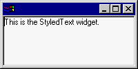
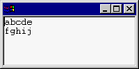
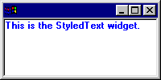
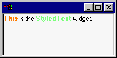
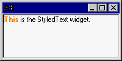
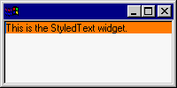
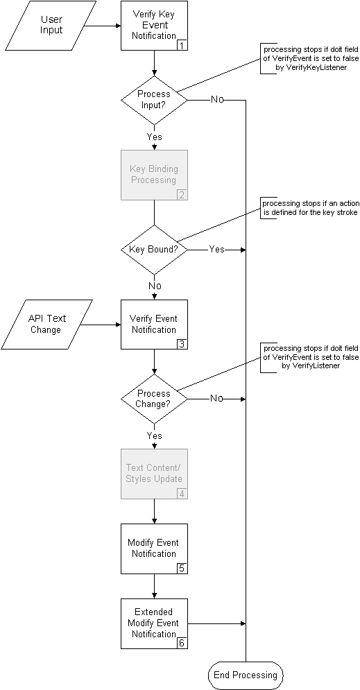
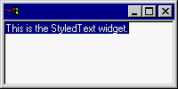

| Eclipse Corner Article |
Summary
The StyledText widget is a customizable widget that can be used to display and edit text with different colors and font styles. This article presents an overview of the concepts, issues, and rules that you should be aware of when using the StyledText widget.
By Lynne Kues and Knut Radloff, OTI
May 7, 2001; updated July 19, 2004 for Eclipse 3.0
The StyledText widget provides a fast and easy to use means to display and edit text. Within the StyledText widget, the following attributes can be specified:
- text foreground color
- text background color
- text font style (i.e., normal, bold or italic)
- line background color
These attributes are referred to as "styles". In addition, the StyledText widget provides standard navigation/editing keyboard behavior, allows for user-defined key bindings, and will perform word wrapping. Note that support for fonts with italic style was added as of version 3.0. However, the StyledText widget does not support mixing of multiple fonts.
The StyledText widget can be customized using pluggable objects to manage text content and styles. You can provide your own implementation of these objects in order to tailor the widget to your needs. Or if you have no need to customize the widget, easy to use API for managing styles and text content is available, making the pluggable nature of the widget completely transparent. How to customize the StyledText widget and why you might want to do so will be discussed in our other article, Into the Deep End of the StyledText Widget.
The StyledText widget is used by the JFace Text Framework, which is part of the Eclipse Platform. The JFace Text Framework provides a layer of abstraction on top of the StyledText widget. The layer is pluggable and supports text formatting, content code assist capabilities, and a source viewer.
The following is a simple example that shows how to create a StyledText widget and set text. This example will be built upon in subsequent sections of this article.

import org.eclipse.swt.*;
import org.eclipse.swt.custom.*;
import org.eclipse.swt.graphics.*;
import org.eclipse.swt.widgets.*;
import org.eclipse.swt.layout.*;
public class StyledTextExample {
public static void main(String [] args) {
// create the widget's shell
Shell shell = new Shell();
shell.setLayout(new FillLayout());
shell.setSize(200, 100);
Display display = shell.getDisplay();
// create the styled text widget
StyledText widget = new StyledText(shell, SWT.BORDER);
widget.setText("This is the StyledText widget.");
shell.open();
while (!shell.isDisposed())
if (!display.readAndDispatch()) display.sleep();
}
}
Within the StyledText widget, both character offsets and line indexes are zero based. For example, in the StyledText widget below, the line at index 0 is "abcde" and the character at offset 0 is "a".
widget.setText("abcde\r\nfghij");

When specifying offsets within the StyledText widget, line delimiter characters are included. In the above example, the line delimiter is CR/LF (i.e., "\r\n"). Therefore, the character at offset five is CR and the character at offset six is LF. Similarly, getLineAtOffset(6) returns 0 and getLineAtOffset(7) returns 1. If there was another CR/LF line break at the end of the second line, getLineAtOffset(14) would return 2.
Caret offsets are also zero based. Calling setCaretOffset(4) for the above widget places the caret between 'd' and 'e'. And, like character offsets, caret offsets take line delimiters into account. In order to place the caret at the beginning of the second line (i.e., in front of the 'f') you would call setCaretOffset(7). Also note that setCaretOffset(12) is a valid call and places the caret at the end of the text, after the 'j'. The range of valid caret offset values is one more than the range of valid character offset values.
Generally, the StyledText widget uses the start offset and the length to specify a text range. Specifying the length of a text range, instead of the end offset, is less error prone because there is no doubt as to whether or not the end offset is included in the range. For example, a start offset of "0" and an end offset of "2" may or may not include the character at offset 2 (in SWT it doesn’t). Expressing the equivalent using a start offset and a length (i.e., 0 and 2 respectively) is unambiguous. It is clear that this describes the characters at offsets 0 and 1.
To maintain consistency with other SWT widgets, API methods that use the start offset and end offset semantics are also provided. For example, SWT uses "start" and "end" when selecting items in a List, Tree or Table. The table below shows the API that uses start offset and end offset (non-range based) and the equivalent API with start offset and length semantics (range based).
| Start Offset, End Offset | Start Offset, Length |
| getSelection() | getSelectionRange() |
| getText(int, int) | getTextRange(int, int) |
| n/a | redrawRange(int, int) |
| n/a | replaceTextRange(int, int, String) |
| setSelection(int, int) | setSelectionRange(int, int) |
StyledText API that uses a start offset and a length will always end with "Range". For example, getSelectionRange will return the selection as a start offset and a length.
You can mix non-range based and range based StyledText API, as demonstrated by the code below. The behavior is the same. However, for the sake of clarity you should decide which kind of API to use and then use it consistently.
widget.setText("This is the StyledText widget.");
widget.getText(5, 7); // returns "is"
widget.getTextRange(5, 2); // returns "is"
widget.setSelection(8, 11); // selects "the"
Point sel = widget.getSelectionRange(); // returns Point with x=8, y=3
widget.setSelectionRange(8, 3); // selects "the"
Point sel = widget.getSelection(); // returns Point with x=8, y=11
The StyledText widget uses StyleRanges to specify text styles. The fields of the StyleRange class are defined as follows:
public int start; // start offset of the style, zero-based public int length; // length of the style public Color foreground; // text foreground color public Color background; // test background color public int fontStyle = SWT.NORMAL; // may be SWT.NORMAL, SWT.BOLD or SWT.ITALIC
If the foreground and background fields for a StyleRange are null, the StyledText widget will use the default widget colors for these fields.
The StyleRange class also includes helper methods for managing and manipulating style ranges. For example, the similarTo(StyleRange) method will return whether or not two style ranges have the same style attributes and only differ in the start and length values.
You define style ranges for the StyledText widget by using the following methods:
public void setStyleRange(StyleRange range) public void setStyleRanges(StyleRange[] ranges) public void replaceStyleRanges(int start, int length, StyleRange[] ranges)
The setStyleRange API applies the specified style to the text range specified in the StyleRange. If the new style overlaps existing styles, the text outside the new style range will keep its existing style information.
The setStyleRanges API simply replaces all styles in the widget with the new ones.
The replaceStyleRanges API is provided to improve performance. It replaces any styles in the given range with the specified new styles. All existing styles in the range will be deleted, so the new styles need not cover the entire replaced range. Note that replaceStyleRanges could be implemented by calling setStyleRange multiple times to cover the entire replace range. StyleRanges with null colors would delete existing styles that have no replacement. However, the new API makes this task a lot easier and more efficient.
When text changes occur in the StyledText widget, styles that are set using any of the above API are updated to reflect the text changes. Styles are always maintained relative to the text to which they are assigned and not to a fixed position. If text is inserted in front of a style, the style ranges after the inserted text are updated to move with their associated text. If text is inserted at a location that is within a style range, the style range is split to accommodate the new text. If new text replaces existing text and some or all of the existing text has a style assigned to it, only the non-replaced text will maintain its styles. In short, new text will never be automatically styled.
The following is a simple example of how to use style ranges in the StyledText widget.
- 
widget.setText("This is the StyledText widget.");
StyleRange styleRange = new StyleRange();
styleRange.start = 0;
styleRange.length = text.length();
styleRange.fontStyle = SWT.BOLD;
styleRange.foreground = display.getSystemColor(SWT.COLOR_BLUE);
widget.setStyleRange(styleRange);
In addition to styles, the setLineBackground (int,int,Color) API can be used to customize the display of the text in the StyledText widget. The color specified when using this API will be applied to the display area of the given lines (e.g., line background colors extend the width of the StyledText widget). If line background colors and styles with background colors are used in conjunction with each other, the style background colors will be displayed after the line background colors are displayed (i.e., the style background color will take precedence for its given text range).
When text changes occur in the StyledText widget, line background colors that are specified via the setLineBackground API are maintained relative to the text lines to which they are assigned and not to a fixed position. Line background colors are updated in a fashion similar to style ranges. New lines of text will never be assigned line background colors and if an existing text line has an associated line background color, the association will be maintained.
SWT Color objects are used to specify styles for the StyledText widget. It is your responsibility to manage the life cycle of these objects. The colors must be disposed when they are no longer used by the widget.
The StyledText widget references colors that are set using the replaceStyleRanges, setLineBackground, setStyleRange and setStyleRanges API methods. Since the widget does not copy Color objects, a color set using these API methods can only be considered unused when all the character ranges and line ranges that use the color have been reset to use the default widget colors. The same is true for the setBackground and setForeground API. Colors set using this API are referenced by StyledText and can only be disposed when no longer set in the widget or when the widget has been disposed.
The following code example illustrates the correct way to manage Color objects. Two Colors, lime and orange, are created and used by the widget..

widget.setText("This is the StyledText widget.");
// create the Colors
Color orange = new Color(display, 255, 127, 0);
Color lime = new Color(display, 127, 255, 127);
// make "This" bold and orange
StyleRange styleRange = new StyleRange();
styleRange.start = 0
styleRange.length = 4;
styleRange.fontStyle = SWT.BOLD;
styleRange.foreground = orange;
widget.setStyleRange(styleRange);
// make "StyledText" bold and lime
styleRange = new StyleRange();
styleRange.start = 12;
styleRange.length = 10;
styleRange.fontStyle = SWT.BOLD;
styleRange.foreground = lime;
widget.setStyleRange(styleRange);
// styleRange = new StyleRange(12, 10, null, null, SWT.NORMAL);
// widget.setStyleRange(styleRange); // set the bold, lime colored text back to normal
// lime.dispose(); // lime is no longer used by the widget so it can be disposed
shell.open();
while (!shell.isDisposed())
if (!display.readAndDispatch()) display.sleep();
orange.dispose();
lime.dispose(); // make sure you comment out this line if you dispose lime above
If you decide that the lime colored text looks ugly, you can use the code that is commented out to reset that text to the widget's default foreground color. The example would then look like this:

Since you reset the only style range that uses the lime color, the lime Color object can be disposed. The orange color can only be disposed when the application terminates because it is still used by the first style range that was set. Note that we use a different StyleRange constructor for resetting the lime style to simplify the style range creation.
The following code resets all style ranges to the widget's default colors.
widget.setStyleRange(null); orange.dispose(); lime.dispose();
Once you have called setStyleRange(null) all colors can be disposed of safely.
The setLineBackground API works exactly like the setStyleRange API. You can only dispose Color objects after you have reset the line backgrounds that use the colors or after you dispose the StyledText widget. For example:

widget.setText("This is the StyledText widget.");
Color orange = new Color(display, 255, 127, 0);
widget.setLineBackground(0, 1, orange);
You can dispose the orange color only after you have reset the line background color of the first line by calling:
widget.setLineBackground(0, 1, null); orange.dispose();
It is advisable for you to cache Color objects and dispose them when you dispose the StyledText widget. Caching colors will improve performance and minimize the number of allocated resources. An in-depth discussion of SWT color resources can be found in the SWT Color Model article.
Text changes within the StyledText widget can occur via user input or programmatically. User input changes occur when keyboard input is received. Programmatic changes occur when the StyledText API is executed. Four API methods exist for performing programmatic changes:
public void append(String text) public void insert(String text) public void replaceTextRange(int start, int length, String text) public void setText(String text)
When text changes occur, the StyledText widget generates four kinds of
notification events:
The verify key event is sent immediately after a key has been pressed. The fields of the VerifyEvent that are used when sending the verify key event are defined as follows:
public boolean doit; // flag indicating whether the keystroke should be processed public char character; // character represented by the key that was typed public int keyCode; // key code of the key that was typed. Used for special keys (e.g., CTRL). public int stateMask; // state of the keyboard modifier keys (e.g., SHIFT) at the time the // event was generated
You can use the verify key event to filter out a key stroke before it is processed by the StyledText widget. To do so, you would set the doit field of the VerifyEvent to false.
To listen to verify key events add a VerifyKeyListener to the StyledText widget and implement the verifyKey(VerifyEvent) method in the listener. Following is an example of a VerifyKeyListener that prevents the user from deleting text by filtering out the backspace and delete keystrokes.
// This handler will filter out the backspace and delete keys to prevent deleting characters.
public void verifyKey(VerifyEvent event) {
if ((event.character == '\u0008') || (event.character == '\u007F')) {
event.doit = false;
}
}
The verify event is sent when a text change is about to occur because of user input. It is sent before the text content change is made and before the change is reflected in the widget. The fields of the VerifyEvent that are used when sending the verify event are defined as follows:
public int start, end; // range of text being modified public String text; // new text that will be inserted or empty string public boolean doit; // flag indicating whether the text change should be processed
The VerifyEvent contains the start offset and end offset of the replaced text as well as the new text. You should register a VerifyListener when you want to make changes to the replace range or to the new text before the widget is updated. You can force the widget to ignore the text change altogether by setting the doit field of the VerifyEvent to false.
You can use the verify event to perform operations such as automatic word completion. Following is an example of a VerifyListener that performs word completion. When you listen for verify events, you must implement the verifyText(VerifyEvent) method.
// This handler will automatically expand the character "S" to "StyledText".
public void verifyText(VerifyEvent event) {
// Only expand when text is inserted.
if (event.end - event.start == 0) {
if (event.text.equals("S")) {
event.text = "StyledText";
}
}
}
Note that the verify event that is sent by the StyledText widget is the same event that is sent by the SWT Text and Combo widgets.
The modify event is sent after the widget's text content has been updated. It does not contain any information about the text change. It serves as a light weight notification that a text change of some sort has occurred. Use it if all you want to know is if the widget text has been modified. For example, to determine whether or not to display a "Save Changes?" prompter when an edited file is closed. To listen to modify events add a ModifyListener to the StyledText widget.
The modify event that is sent by the StyledText widget is the same event that is sent by the SWT Text and Combo widgets.
The extended modify event, which is sent after the modify event, contains the start offset and length of the new text as well as the replaced text. It is the mirror image of the verify event. The extended modify event is sent after the widget has changed and when the text model reflects the actual text change. It, therefore, does not have a doit field like the verify key event and verify event do.
Register an ExtendedModifyListener if you need to update data after a text change occurred and when you need to know the actual text change. For example, if you are developing an editor for word processing that supports text styles, when a user types a character you will probably want that character to take on the styles of the characters around it. In order to implement this behavior, you will need to know where the text change occurred, so that you can:
The extended modify event will give you this information. Note that you cannot use the verify event to implement the above scenario since the text content change has not occurred yet when the verify event event is sent, so changing the style of the new character will be impossible. Similarly, you cannot use the modify event to implement the above scenario because it does not contain information about the text change (e.g., where the text change occurred).
Note that a new event was introduced instead of enhancing the existing modify event in order to maintain compatibility with SWT. Not all SWT widgets that send a modify event can get the data that is necessary to send an extended modify event.
The following diagram depicts when the events described above occur within the StyledText widget. The "Process Input?" and "Process Change?" decisions are determined by the value of the boolean VerifyEvent.doit field as described above. The key binding processing shown in gray in the diagram is described in more detail below.
As shown in the diagram by the "Key Bound?" decision, if a key action is defined for user input, text change processing will stop and the key action will be processed instead. In the verify key event example above, the backspace and delete keys are editing actions. So you must use a VerifyKeyListener vs. a VerifyListener to filter out these keystrokes. VerifyListeners are only notified about content changes, not editing actions.
The Text Content/Styles Update process is also shown in gray. This portion of the diagram will be discussed in depth in our second article, Into the Deep End of the StyledText Widget. For this article, knowing that the widget applies the text change and updates its styles during this step is sufficient.

The following table shows the event data that is sent when you type a character, when you delete a character and when you replace two characters with another character. There is one column for each event object that is sent. The column header shows the event object class and the Step number shown in the flow chart above.
When text changes occur, the VerifyEvent will contain the location of the replaced text (as a start and end offset) and the new text, while the ExtendedModifyEvent will contain the location of the new text (as start and length) and the replaced text. The ModifyEvent is not shown since it does not have any data.
Note that when the verify key event is sent in Step 1, the start, end and text fields of its VerifyEvent are not used and are, therefore, not shown in the table. Likewise the character, keyCode and stateMask fields are not used in the VerifyEvent that is created for Step 3.
The second scenario demonstrates that the VerifyKeyListener receives raw keyboard input in the VerifyEvent. The VerifyEvent.character field is set to \u0008, which is the Unicode value of the backspace key.
Scenario |
VerifyEvent
Data (1) |
VerifyEvent
Data (3) |
ExtendedModifyEvent Data (6) |
| User
types character 'A' |
doit
= true character = 'A' keyCode = 0 stateMask = 0 |
start
= 0 end = 0 text = "A" doit = true |
start
= 0 length = 1 replacedText = "" |
| User
deletes character 'A' |
doit
= true character = \u0008 (backspace) keyCode = 0 stateMask = 0 |
start
= 0 end = 1 text = "" doit = true |
start
= 0 length = 0 replacedText = "A" |
| User
replaces "AA" with 'B' |
doit
= true character = 'B' keyCode = 0 stateMask = 0 |
start
= 0 end = 2 text = "B" doit = true |
start
= 0 length = 1 replacedText = "AA" |
The following table illustrates the data for the change notification events under various API text change scenarios. The Initial Text column shows the text before the change is made. The initial text of one scenario is the changed text of the previous scenario. There is one column for each event object that is sent. The column header for these columns shows the event object class and the Step number shown in the flow chart above. A ^ character shows the insert point for new text, if any. The text replace range, if any, is highlighted using white text on a blue background.
When text changes occur, the VerifyEvent will contain the location of the replaced text (as a start and end offset) and the new text, while the ExtendedModifyEvent will contain the location of the new text (as start and length) and the replaced text. The ModifyEvent is not shown since it does not have any data.
Scenario |
Initial Text |
VerifyEvent Data (3) |
ExtendedModifyEvent Data (6) |
| Insert "sopping
" before "wet" |
Getting your feet wet ^ |
start = 18 end = 18 text = "sopping " |
start = 18 length = 8 replacedText = "" |
| Delete "y" | Getting your
feet sopping wet |
start = 8 end = 9 text = "" |
start = 8 length = 0 replacedText = "y" |
| Replace "our" with "my" |
Getting our feet sopping wet
^ |
start = 8 end = 11 text = "my" |
start = 8 length = 2 replacedText = "our" |
Note that, as discussed above, you could change the replace range and the new text that are passed in the VerifyEvent. For example, in the first scenario you could change the end offset of the replace range to 21 in order to replace the word "wet" and change the new text to "damp". The result would be "Getting your feet damp".
// This handler will change feet that are about to get "sopping" wet to "damp" feet.
public void verifyText(VerifyEvent event) {
if ((event.start == 18) && (event.end == 18) && (event.text.equals("sopping"))) {
event.end = 21;
event.text = "damp";
}
}
You could also set the VerifyEvent.doit field to false if you don't want to get sopping feet at all.
// This handler will prevent attempts to insert the word "sopping".
public void verifyText(VerifyEvent event) {
if (event.text.equals("sopping")) {
event.doit = false;
}
}
Whenever the same text is redrawn at the same location in the StyledText widget, you will see flashing. Flash occurs because the StyledText widget first clears the area to be drawn and then draws the text and its styles. Since nothing has changed, the redraw operation is perceived as a flash.
In order to avoid flash, you should minimize the amount of redrawing that occurs in the widget. Unnecessary redrawing can occur when you use the setStyleRange API if the style you specify overlaps existing styles with the same colors and font style. The StyledText widget does not check for duplicate styles, so the entire style range will be redrawn and unchanged text will be refreshed. For the same reason you should also avoid replacing existing styles with the same styles when using the replaceStyleRanges API.
For efficiency reasons, the StyledText widget does not perform duplicate style optimizations. Users of the StyledText widget will most likely set styles in the ExtendedModifyListener. Since this listener is time-sensitive (i.e., it is called every time a keystroke is entered), the StyledText widget avoids superfluous processing when styles are specified. Duplicate style optimizations could also mask application problems. If an application is creating duplicate styles, this could be a symptom of a larger problem with the application’s logic.
Similar refresh rules apply to the setLineBackground API. If you specify line background colors that already exist, you will see flash when unnecessary redrawing occurs. Besides reducing flash, avoiding unnecessary redrawing will also improve performance since less text will be rendered.
You can change and query the default key bindings using the setKeyBinding(int key, int action) and getKeyBinding(int key) methods. The setKeyBinding method takes a key code or character ORed with one or more of the modifiers SWT.CTRL, SWT.SHIFT or SWT.ALT as the first argument. SWT.java defines constants for some of the frequently used key codes (e.g., SWT.BS for the backspace key). The second argument is one of the actions defined in ST.java (e.g., ST. DELETE_PREVIOUS). Thus, to map <CTRL>+<b> to work like the backspace key and delete the character in front of the caret you would use
widget.setKeyBinding(SWT.CTRL | ‘b’, ST.DELETE_PREVIOUS)
You can map more than one key to a single action, but one key can never trigger more than one action. If you use an already bound key combination to trigger a different action, the existing binding will be removed.
To remove a key binding you specify SWT.NULL as the action. For example, if you want to remove the default key binding for <CTRL>+<PAGE UP>, which by default moves the caret in front of the first character of the current page, you would use
widget.setKeyBinding(SWT.CTRL | SWT.PAGE_UP, SWT.NULL)
To find out which action is triggered by default when <CTRL>+<HOME> is pressed you would use
widget.getKeyBinding(SWT.CTRL | SWT.HOME)
which returns ST.TEXT_START (sets the caret in front of the first character of the text).
In addition to the setKeyBinding API, you can use the invokeAction method with one of the actions defined in ST.java to invoke an action independent of keyboard input or to handle multi-key actions. For example, to implement Emacs style multi-key actions you could use a VerifyKeyListener to listen for a key sequence and call invokeAction to perform the desired action. Multi-key actions are actions that require two separate keystrokes, where the first keystroke establishes the context for the second keystroke. The following code snippet demonstrates how to implement a multi-key action. We assume that there is a boolean class variable called previousCtrlX that we use to store whether the most recent keystroke was a <CTRL>+<X>.
// This VerifyKeyListener implements multi-keystrokes using <CTRL>+<X> as the
// first keystroke and <P> as the second keystroke. These keystroke are ignore
// by the StyledText widget since we set the VerifyEvent.doit field to false.
widget.addVerifyKeyListener(new VerifyKeyListener() {
public void verifyKey(VerifyEvent event) {
// check whether the current keystroke is a <CTRL>+<X>
boolean isCtrlX = (event.stateMask == SWT.CTRL) && (event.character == '\u0018');
// select one page if the previous keystroke was <CTRL>+<X> and
// the current keystroke is 'P'
if (previousCtrlX && Character.toUpperCase(event.character) == 'P') {
widget.invokeAction(ST.SELECT_PAGE_DOWN);
// ignore the second key of a multi-keystroke
event.doit = false;
} else if (isCtrlX) {
// ignore <CTRL>+<X> key strokes
event.doit = false;
}
previousCtrlX = isCtrlX;
}
});
When pressing <CTRL>+<X> followed by hitting <P> the example application looks like this

Any other <CTRL>+<X> multi-keystroke will result in the second key being inserted in the widget since we only filter out the <P> key combination.
In this article we've covered how to do the following within the StyledText widget:
These functions cover basic text editing and rendering behavior. However, if your application has specialized editing or rendering needs, the StyledText widget can be customized. In our next article, we will go into depth about why you may want to customize the StyledText widget and how you would do this.